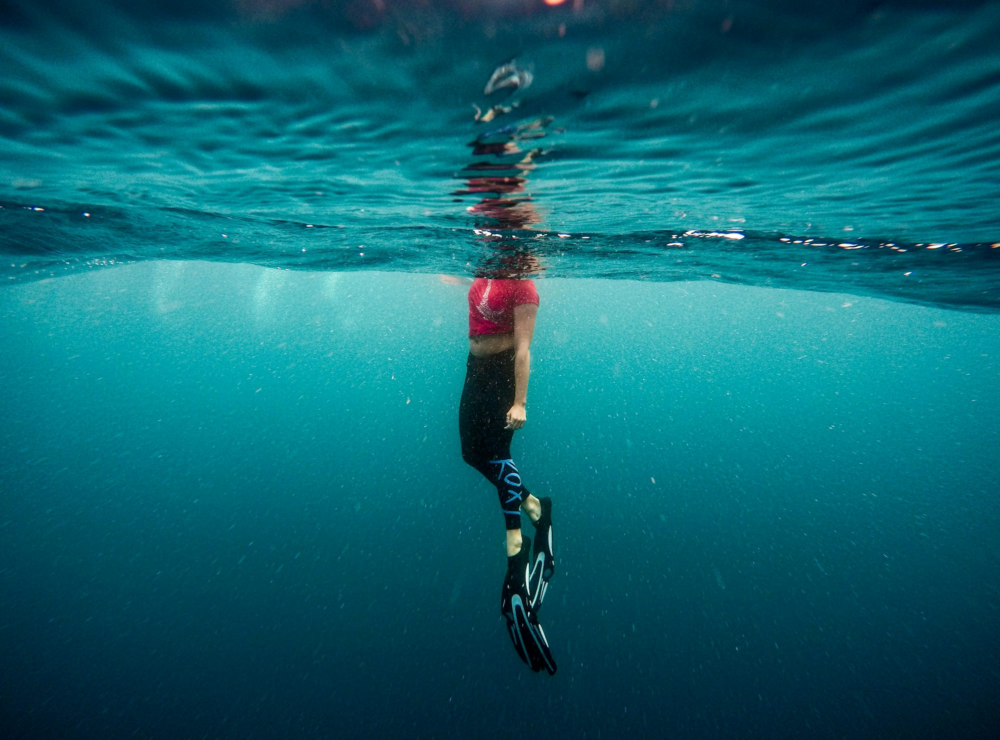

Diving into the Depths: A Comprehensive Guide to Underwater Adventures
This article explores various diving disciplines, their unique experiences, and the significance of marine conservation in preserving underwater ecosystems.Scuba diving is perhaps the most recognized form of underwater exploration, allowing individuals to explore the ocean with the aid of self-contained underwater breathing apparatus. This exhilarating activity grants divers the freedom to immerse themselves in diverse marine environments, whether it's gliding through coral gardens or navigating the eerie beauty of submerged wrecks. The training required to become a certified diver ensures that individuals are equipped with the skills needed to explore safely and responsibly. Organizations such as PADI and SSI offer comprehensive courses covering everything from basic safety procedures to advanced diving techniques, making scuba diving accessible to enthusiasts worldwide.
Recreational diving not only serves as an adventure but also provides a platform for scientific research. Marine biologists often utilize scuba diving to conduct studies on coral reef health, fish populations, and underwater habitats. By collecting data and observing ecosystems in their natural state, researchers can gain valuable insights that contribute to the conservation of marine environments. This synergy between recreation and research underscores the importance of scuba diving in fostering a greater appreciation for the ocean and its inhabitants.
Another popular method of exploring the underwater realm is snorkeling, which offers an accessible alternative for those who may not want to invest in extensive training or equipment. With just a mask, snorkel, and fins, snorkelers can float on the surface of the water, observing the vibrant life beneath them. Locations such as the Great Barrier Reef and the Bahamas attract millions of snorkelers each year, providing an opportunity for people of all ages to experience the wonder of marine ecosystems. Snorkeling is a fantastic way to introduce children and beginners to the beauty of the ocean, often sparking a lifelong passion for marine conservation.
Freediving, or breath-hold diving, represents another thrilling aspect of underwater exploration. Freedivers rely solely on their ability to hold their breath while descending into the depths. This discipline emphasizes relaxation and mental clarity, allowing divers to explore the ocean without the constraints of equipment. Competitive freediving has gained traction over the years, with athletes participating in events that test their limits in static apnea, dynamic apnea, and depth disciplines. Freediving fosters a deep connection with the ocean and encourages practitioners to respect marine life while promoting sustainable practices.
Commercial diving takes underwater exploration into the realm of professional work, encompassing various industries such as construction, maintenance, and inspection. Divers in this field undergo specialized training to navigate the challenges of underwater tasks safely. They often employ advanced equipment and techniques to perform essential work, from underwater welding to scientific research. The skills honed through commercial diving training not only contribute to economic development but also enhance our understanding of underwater ecosystems and their importance in our world.
The integration of technology into underwater exploration has revolutionized our ability to study marine environments. Remotely operated vehicles (ROVs) and autonomous underwater vehicles (AUVs) have expanded the frontiers of marine research, allowing scientists to explore depths that were previously unreachable. Equipped with high-resolution cameras and sophisticated sensors, these unmanned systems gather critical data on underwater habitats, ocean currents, and marine biodiversity. The use of ROVs and AUVs has made significant contributions to our understanding of the ocean, facilitating groundbreaking research and discovery.
Underwater photography and videography have also transformed the way we connect with the ocean. With advancements in camera technology, divers can capture stunning images and footage of marine life and underwater landscapes. These visuals serve as powerful tools for education and advocacy, raising awareness about the importance of marine conservation. Many underwater photographers collaborate with researchers and conservation organizations to document the beauty of marine ecosystems, emphasizing the need to protect these environments from threats such as pollution and overfishing.
Cave diving presents a unique and adventurous way to explore underwater environments. This discipline requires specialized training due to the confined spaces and potential hazards associated with submerged caves. Cave divers navigate intricate passages and stunning geological formations, often discovering unique ecosystems adapted to life in darkness. The thrill of exploring these hidden environments not only showcases the beauty of nature but also emphasizes the importance of responsible diving practices to ensure the safety of both divers and the delicate ecosystems they encounter.
Ice diving offers another captivating experience for those seeking adventure beneath the surface. This discipline allows divers to explore the underwater world in frozen environments, requiring specific skills and equipment to navigate cold temperatures and limited visibility. Ice divers enter the water through holes cut in the ice, revealing a breathtaking landscape where the interplay of light and ice creates a magical atmosphere. This unique experience highlights the resilience of marine life in extreme conditions and fosters a deeper appreciation for the ocean's diverse ecosystems.
Night diving provides a different perspective on the underwater world, allowing divers to witness the nocturnal behaviors of marine life. As darkness falls, many species emerge, creating a vibrant and dynamic environment that contrasts with daytime exploration. Equipped with specialized lights, divers can observe bioluminescent organisms and unique species that thrive at night. Night diving adds an element of mystery and excitement to the diving experience, encouraging divers to explore new depths and appreciate the diverse life that inhabits the ocean.
As we delve into the various methods of underwater exploration, it becomes evident that conservation is a crucial aspect of preserving marine environments. Many divers and organizations actively engage in efforts to protect fragile ecosystems, advocating for sustainable practices and responsible tourism. Conservation initiatives focus on reducing pollution, protecting habitats, and promoting awareness of the impacts of climate change on our oceans. By prioritizing conservation, we ensure that future generations can enjoy the beauty of marine ecosystems and the adventures they offer.
The ocean covers more than 70% of our planet, playing a vital role in regulating climate and supporting biodiversity. As we explore the depths of the ocean, we recognize the interconnectedness of all life forms. From the tiniest plankton to the largest whales, every species plays a significant role in maintaining ecological balance. Through underwater exploration, we gain valuable insights into this delicate web of life, fostering a sense of responsibility to protect and preserve these ecosystems for future generations.
In conclusion, underwater exploration offers a diverse array of experiences, from recreational diving to professional research. Each method provides unique opportunities to engage with the ocean and its inhabitants, enhancing our understanding of marine ecosystems. As technology continues to evolve, our ability to explore the depths of the ocean expands, revealing new wonders and challenges. Ultimately, the responsibility lies with us to ensure the health and sustainability of these environments, embracing the adventure while respecting the ocean's beauty and fragility. Together, we can become advocates for the incredible world beneath the waves.